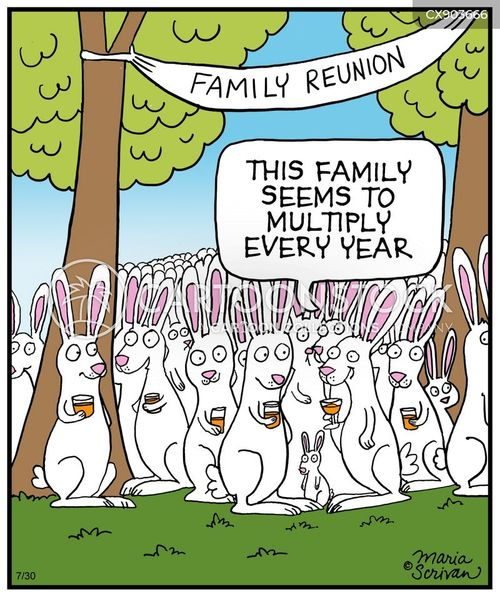

Rabbit

Taken from Cartoon
- Definition: A rabbit (also called a fork() bomb) is malware whose purpose is to harm the availability of computer (OS) resources, such as memory, disk space, CPU time, and I/O devices (= a denial of service (DoS) attack.) It replicates (just like a virus or worm) without limits, but doesn't carry any payload: its only purpose is to use an OS resource to the greatest extent possible to make it crash. A small example of a memory-exhausting rabbit in the C language:
int main() {
while(1)
fork();
return 0;
}
Reason for the name: Since rabbits are animals that naturally multiply very fast. Fun fact: the Fibonacci sequence, which we all know grows very fast, was an early attempt to model the growth of the population of rabbits!
Propagation: Once installed and triggered, the rabbit will start indefinitely creating copies of itself to clot up the OS.
Examples of a rabbit: an attack against Iran's state broadcaster in 2022.
 These notes by Miriam Briskman are licensed under CC BY-NC 4.0 and based on sources.
These notes by Miriam Briskman are licensed under CC BY-NC 4.0 and based on sources.